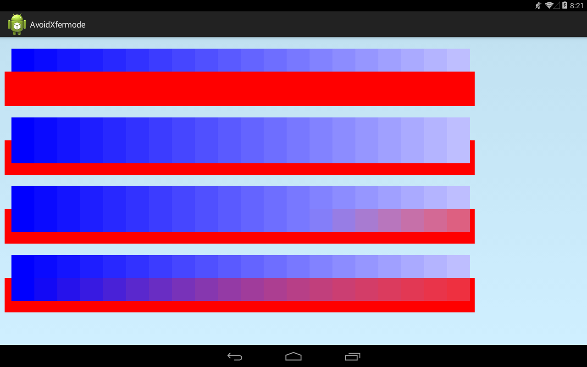
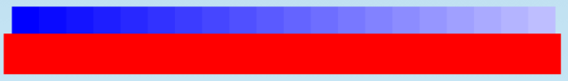
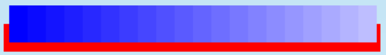
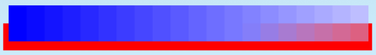
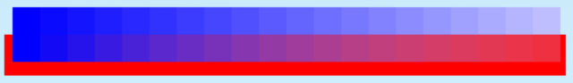
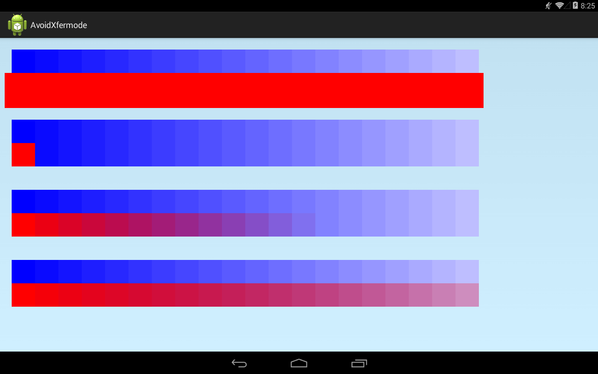
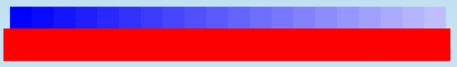
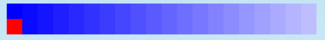
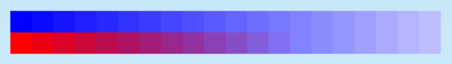
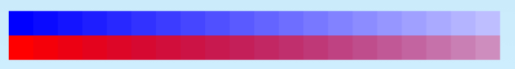

В этом уроке:
- используем AvoidXfermode
Еще один урок про работу с цветом. При наложении одной картинки на другую, мы можем указать определенный цвет и режим наложения. И соответственно наложение будет либо происходить только на пикселы указанного цвета (TARGET-режим), либо только на всех других пикселах (AVOID-режим). Для этого используется AvoidXfermode. Он хоть и deprecated, но достаточно интересен, поэтому расскажу о нем.
Сделаем пример, в котором будем красный прямоугольник рисовать поверх синих.
Создадим проект:
Project name: P1561_AvoidXfermode
Build Target: Android 4.4
Application name: AvoidXfermode
Package name: ru.startandroid.develop.p1561avoidxfermode
Create Activity: MainActivity
MainActivity.java:
package ru.startandroid.develop.p1561avoidxfermode;
import android.app.Activity;
import android.content.Context;
import android.graphics.AvoidXfermode;
import android.graphics.AvoidXfermode.Mode;
import android.graphics.Bitmap;
import android.graphics.Canvas;
import android.graphics.Color;
import android.graphics.Paint;
import android.graphics.Rect;
import android.os.Bundle;
import android.view.View;
public class MainActivity extends Activity {
@Override
protected void onCreate(Bundle savedInstanceState) {
super.onCreate(savedInstanceState);
setContentView(new DrawView(this));
}
class DrawView extends View {
Paint paint;
Rect rect;
Bitmap bitmap;
Mode mode = Mode.AVOID;
public DrawView(Context context) {
super(context);
paint = new Paint(Paint.ANTI_ALIAS_FLAG);
rect = new Rect(0, 0, 50, 100);
createBitmap();
}
@Override
protected void onDraw(Canvas canvas) {
canvas.drawARGB(80, 102, 204, 255);
canvas.drawBitmap(bitmap, 0, 0, paint);
}
void createBitmap() {
// создание bitmap
bitmap = Bitmap.createBitmap(1100, 700, Bitmap.Config.ARGB_8888);
Canvas bitmapCanvas = new Canvas(bitmap);
// создание кисти для использования AvoidXfermode
Paint redPaint = new Paint(Paint.ANTI_ALIAS_FLAG);
redPaint.setStyle(Paint.Style.FILL_AND_STROKE);
redPaint.setColor(Color.RED);
// рисование прямоугольников
drawBitmap(bitmapCanvas, redPaint);
// настройка AvoidXfermode для кисти
redPaint.setXfermode(new AvoidXfermode(Color.BLUE, 0, mode));
// рисование прямоугольников
drawBitmap(bitmapCanvas, redPaint);
redPaint.setXfermode(new AvoidXfermode(Color.BLUE, 127, mode));
drawBitmap(bitmapCanvas, redPaint);
redPaint.setXfermode(new AvoidXfermode(Color.BLUE, 255, mode));
drawBitmap(bitmapCanvas, redPaint);
}
void drawBitmap(Canvas bitmapCanvas, Paint redPaint) {
Paint bitmapPaint = new Paint(Paint.ANTI_ALIAS_FLAG);
bitmapPaint.setStyle(Paint.Style.FILL_AND_STROKE);
// рисование синих прямоугольников
bitmapCanvas.save();
bitmapCanvas.translate(25, 25);
for (int i = 0; i < 20; i++) {
bitmapPaint.setColor(Color.rgb(i * 10, i * 10, 255));
bitmapCanvas.drawRect(rect, bitmapPaint);
bitmapCanvas.translate(50, 0);
}
bitmapCanvas.restore();
// рисование красного прямоугольника кистью с AvoidXfermode
bitmapCanvas.drawRect(10, 75, 1035, 150, redPaint);
bitmapCanvas.translate(0, 150);
}
}
}В конструкторе DrawView вызываем метод createBitmap для создания bitmap. Я создаю его в формате ARGB_8888 и все операции рисования и наложения прямоугольников буду производить на нем, а потом просто буду рисовать его на канву. Это необходимо, т.к. если рисовать прямоугольники сразу на канве, то механизм AvoidXfermode не работает. Подозреваю, что это происходит из-за недостаточной степени «битности» стандартной канвы.
В методе createBitmap создаем bitmap, создаем красную кисть и 4 раза используем ее в методе drawBitmap для рисования прямоугольников. Первый раз без AvoidXfermode, затем три раза с использованием AvoidXfermode.
При создании AvoidXfermode необходимо указать три параметра:
- цвет, который будет учитываться при наложении
- степень толерантности (0-255)
- режим наложения (AVOID, TARGET)
Когда запустим пример, то более подробно остановимся на этих параметрах.
В методе drawBitmap мы выводим много прямоугольников с различной градацией синего цвета, а затем поверх них рисуем красный цвет полученной кистью (той, которая первый раз без AvoidXfermode, а последующие три раза с ним).
Запустим пример.

Видим 4 наложения красного прямоугольника на синие, но все эти наложения немного разные. Давайте смотреть почему.
1)

Без использования AvoidXfermode. Т.е. все как и должно быть, красный лег поверх синего.
2)

Для красной кисти мы использовали AvoidXfermode(Color.BLUE, 0, Mode.AVOID)
Используемые параметры: синий цвет, 0, AVOID-режим. Это означает, что при наложении будет избегаться (параметр AVOID) синий цвет (параметр Color.BLUE). Причем не только сам синий, но и все похожие на него цвета (параметр 0).
Это видно на картинке. Красный при наложении избегает синий цвет. Т.е. он просто не ложится поверх синего.
3)

Для красной кисти мы использовали AvoidXfermode(Color.BLUE, 127, Mode.AVOID)
Используемые параметры: синий цвет, 127, AVOID-режим. Это означает, что при наложении будет избегаться (параметр AVOID) синий цвет (параметр Color.BLUE). Причем не только сам синий, но и ближайшие похожие на него (параметр 127).
Это видно на картинке. Красный при наложении избегает синий и близкие к синему цвета. Т.е. если 0 означал, что все оттенки синего будут срабатывать, то значение толерантности 127 уже дает некоторую степень свободы и совсем далекие оттенки синего уже вполне допускают наложение красного.
4)

Для красной кисти мы использовали AvoidXfermode(Color.BLUE, 255, Mode.AVOID)
Используемые параметры: синий цвет, 255, AVOID-режим. Это означает, что при наложении будет избегаться (параметр AVOID) синий цвет (параметр Color.BLUE). Причем только синий (параметр 255).
Это видно на картинке. Красный при наложении избегает только совсем синий, а на остальных градациях он проявляется.
Изменим режим
Mode mode = Mode.TARGET;Теперь будет обратный эффект. Красный при наложении будет отображаться только там где есть синий.
Запускаем приложение

Разбираем 4 результата
1)

Все стандартно, т.к. использовали кисть без AvoidXfermode
2)

Для красной кисти мы использовали AvoidXfermode(Color.BLUE, 0, Mode.TARGET)
Используемые параметры: синий цвет, 0, TARGET-режим. Это означает, что наложение будет работать (параметр TARGET) только на синем цвете (параметр Color.BLUE). Причем только на чисто синем цвете (параметр 0).
Это видно на картинке. Красный при наложении лег только на чисто синий цвет. А за пределами синего прямоугольника наложение не сработало.
3)

Для красной кисти мы использовали AvoidXfermode(Color.BLUE, 127, Mode.TARGET)
Используемые параметры: синий цвет, 127, TARGET-режим. Это означает, что наложение будет работать (параметр TARGET) только на синем цвете (параметр Color.BLUE). Причем не только на чисто синем цвете, но и на близких к нему цветах (параметр 127).
Это видно на картинке. Красный при наложении лег на синий цвет и на его ближайшие оттенки. За их пределами красный не лег.
4)

Для красной кисти мы использовали AvoidXfermode(Color.BLUE, 255, Mode.TARGET)
Используемые параметры: синий цвет, 255, TARGET-режим. Это означает, что наложение будет работать (параметр TARGET) только на синем цвете (параметр Color.BLUE). Причем не только на чисто синем цвете, но и даже на отдаленно похожих на него цветах (параметр 255).
Это видно на картинке. Красный при наложении лег на синий цвет и на все его оттенки. За их пределами красный не лег.